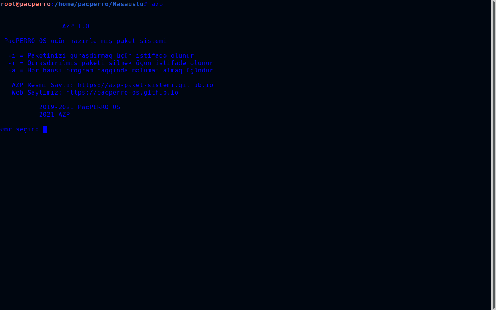
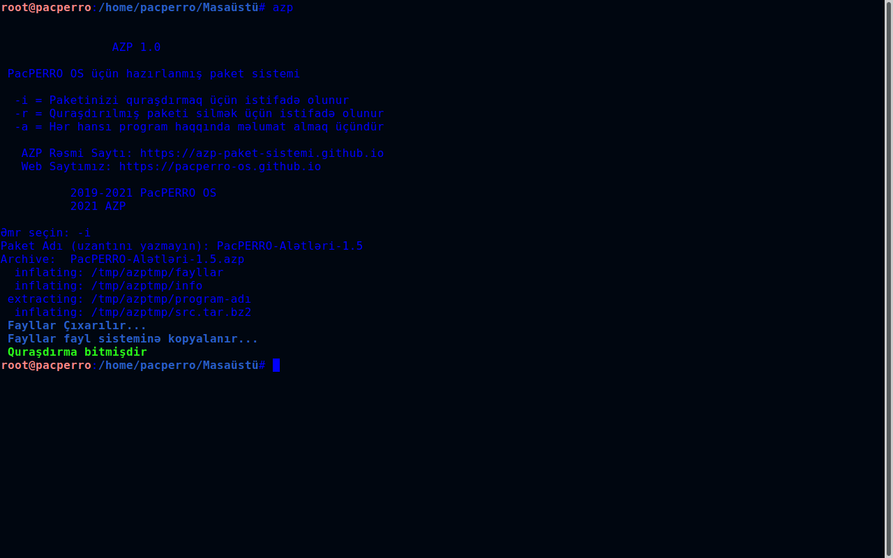

AZP



AZP, PacPERRO OS tərəfindən inkişaf etdirilən və bütün Linux distrolarına çalışabilən bir paket sistemidir. Paket sistemi Bash Script ilə yazılmışdır. Açıq qaynaqlı və güvənlidir. Hər bir Linux istifadəçisi öz azp paketini bununla asalınqla yarada bilər.
Öz azp paketinizi yaratmaq üçün AZP Paket Hazırlama səhifəsindən yardım ala bilərsiniz
AZP'ni buradan yükləyin (Yüklədiktən sonra faylı kəsib /usr/bin içinə atın)2021 AZP